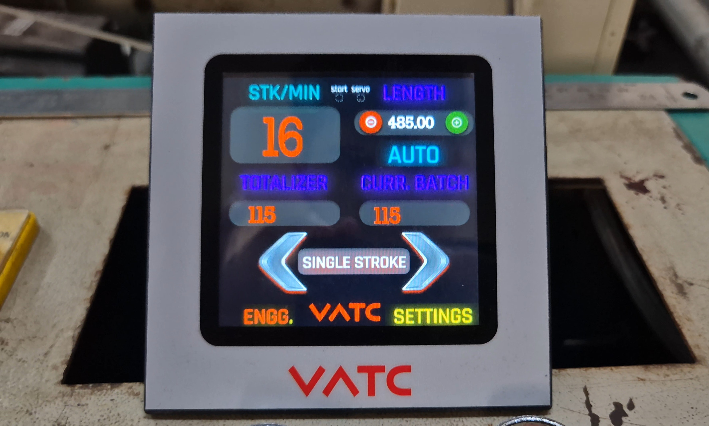
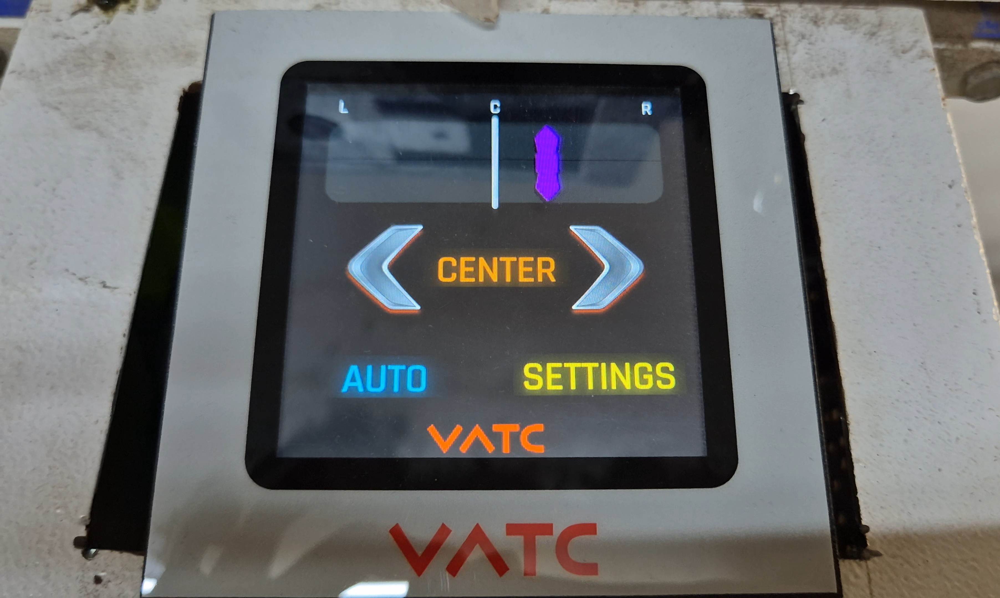
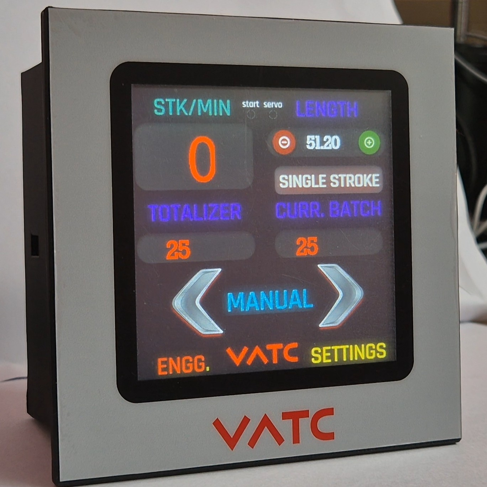
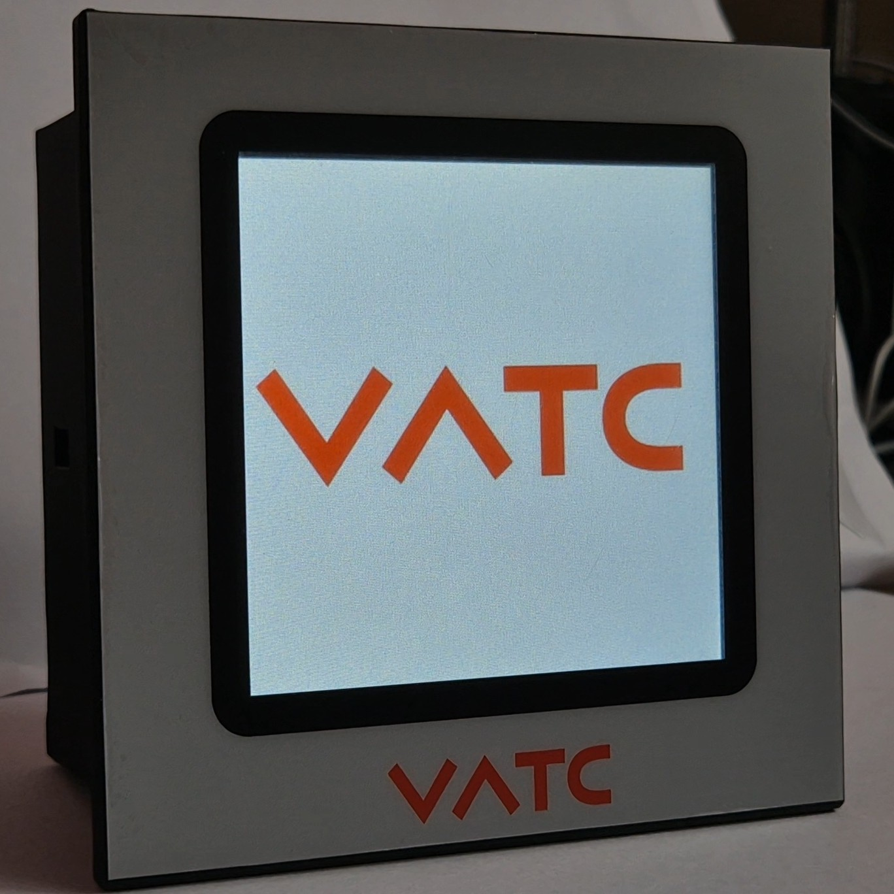

We architect and fabricate dedicated touch-panel motion controllers, high-speed cut-to-length systems, and closed-loop ultrasonic web guides built directly into ruggedized enclosures.
No renders or mockups. Real panel-mount controllers engineered, programmed, and running on customer factory floors.

Panel-mounted servo feed controller with double-integer pulse conversion, single/continuous stroke sequencing, and real-time batch totalizer tracking.

Real-time roll unwinding edge correction with instant Left-Center-Right tactile interface. Drives stepper and DC actuator carriages to eliminate roll runout.

Bespoke powder-coated front bezels with high-durability silk-screened VATC graphics, laser-cut cutouts, and vibration-proof rear chassis clamps.

Custom GUI layouts developed specifically for shop-floor operators. High-contrast large buttons readable under direct factory lighting.
Simulate line speed dynamics against VATC’s closed-loop PID servo/stepper response. Adjust the production line speed to view dynamic corrective displacement.
Time elapsed from edge transducer threshold trigger to carriage stabilization.
Residual lateral runout before slitting or rewinding roll contact.
High-speed optocouplers isolate factory line spikes up to 2.5 kV. Proximity sensors and encoder lines are decoupled before touching logic pins.
Direct bare-metal C control loops executing PID calculation every 1 millisecond with zero OS overhead, guaranteeing deterministic cycle execution.
Monolithic H-Bridge motor drivers with integrated current sensing, over-temperature protection, and synchronous rectification for high inductive loads.
We reject hobbyist breakout modules and unshielded hobby wiring. Every VATC control cabinet and PCB is architected in accordance with rigorous industrial criteria.